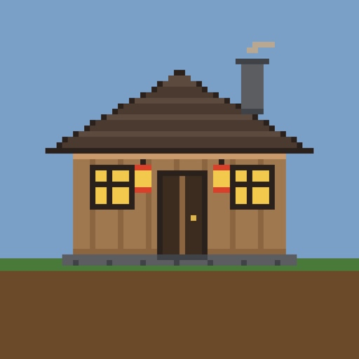
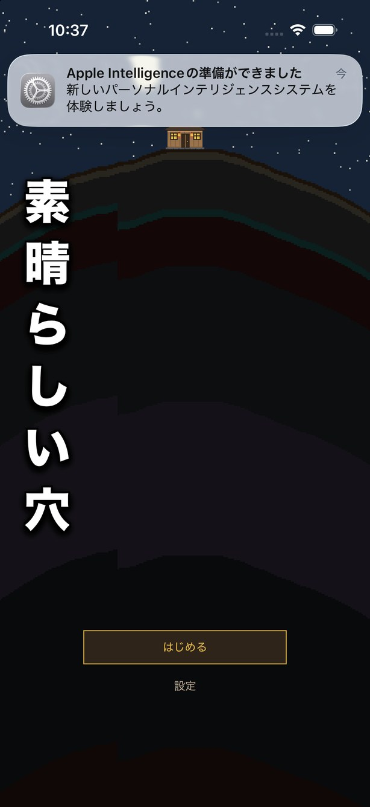
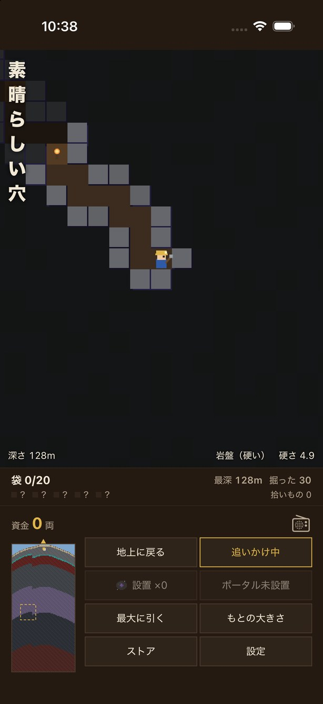
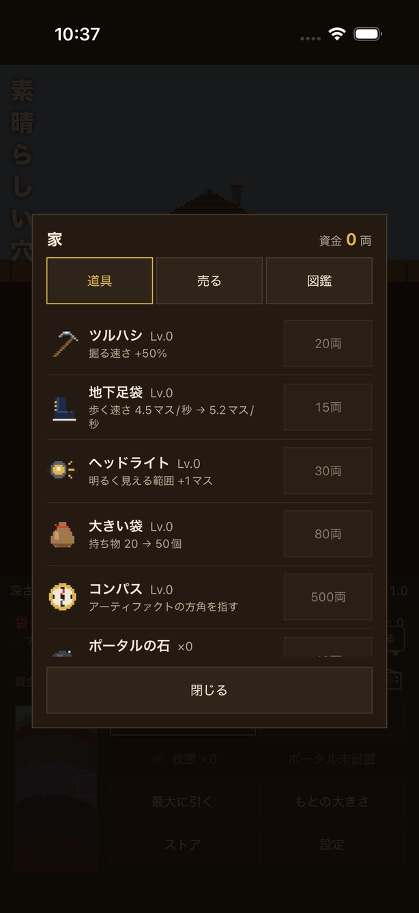

どんなゲームか
掘る。それだけ
画面を押したところまで掘り進みます。土の硬さは深さで変わり、深いほど時間がかかる。地層の境目は壁になっていて、道具を鍛えないと先へ進めません。
持ち帰って、売る
鉱石も拾いものも袋に入れて持ち帰り、山頂の家で売ります。袋は小さいので、いっぱいになったら帰りどき。やられると袋の中身はその場にばらまかれます。
水と溶岩
掘り当てた泉から水が湧き、溶岩に触れれば固まって黒曜石になります。灼熱の部屋も、上から水を引けば通れます。
遺跡とアーティファクト
7 つの遺跡に、その遺跡の罠を無効にする道具が 1 つずつ。落石の遺跡には強化ヘルメット、という具合に、攻略した順だけ山が楽になります。
穴は残る
タイトル画面の背景は、あなたが掘った穴そのものです。掘るほど山の断面に線が増えていきます。
掘り当てたあと
埋蔵金の箱には、前に掘り当てた人が入っています。続きは遊んでのお楽しみ。
画面



サウンドトラック
ゲーム内で流れるサイバー演歌 21 曲（合計およそ 1 時間）。ラジオをつけると、掘っているあいだシャッフルで流れます。曲名を押すと試聴できます。
曲を選んでください
曲は Suno で作っています。ゲームの中ではラジオ越しの音に加工していて、深いところほど電波が濁ります。ここで聴けるのは加工前の音源です。
作りの話
画像を 1 枚も使っていない
山も家も道具も、すべてコードで描いた矩形の集まりです。アプリに入っている画像はアイコンだけ。
効果音は波形から合成
掘る音も水の音も、起動時に計算して作っています。音源ファイルを持たないので 0 バイト。
世界は保存していない
2,000×4,000 マスのうち、空洞・鉱石・水・拾いものの位置は毎回シードから計算し直します。保存するのは「あなたが変えたもの」だけです。
SwiftUI と SpriteKit
画面まわりは SwiftUI、穴の描画は SpriteKit。外部ライブラリは広告の SDK だけです。
サポート
不具合の報告やご要望は、お問い合わせフォームからお寄せください。個人で作っているので、すべてに返信できるとは限りませんが、いただいた内容はすべて読んでいます。
データの取り扱いについてはプライバシーポリシーをご覧ください。